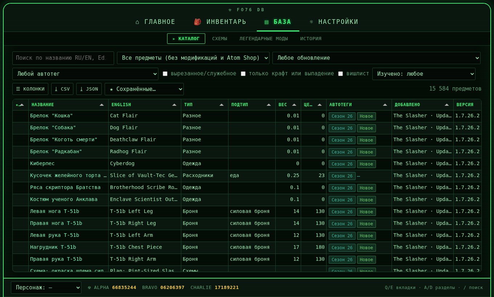
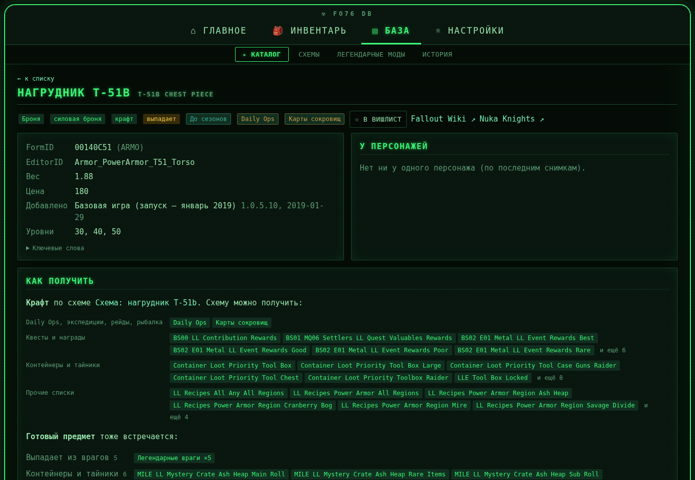
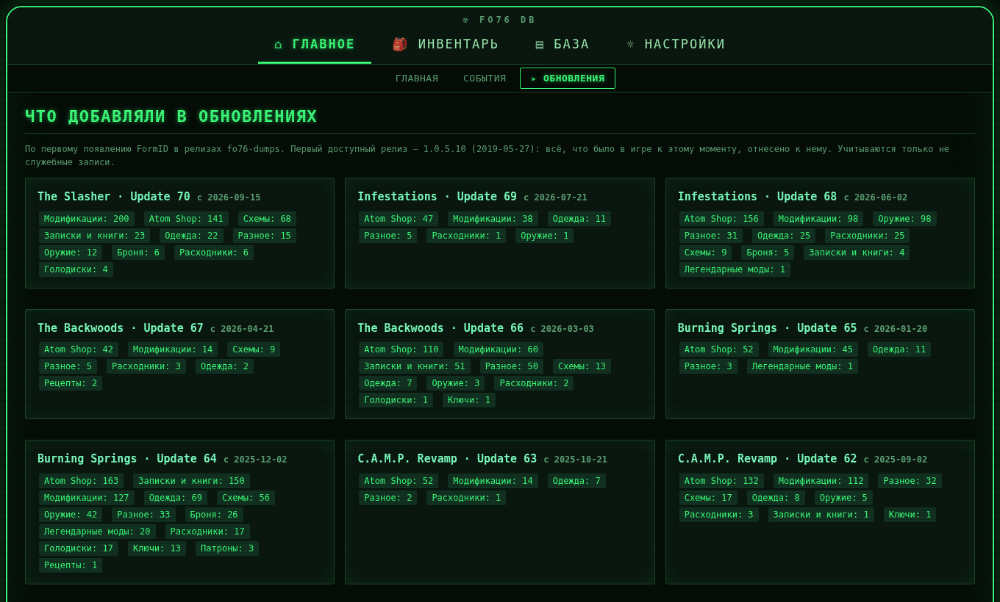

FO76 DB
Локальная база Fallout 76: каталог предметов с историей обновлений, инвентарь всех персонажей, схемы, легендарные роллы, события и Минерва. Всё на вашем компьютере, игру утилита не меняет.
Windows 10/11 и Linux · бесплатно, открытый код (GNU AGPL v3)

Что умеет
Список предметов и названия EN/RU берутся из установленной игры, статы и история — из публичных выгрузок, инвентарь — из модов Invent-O-Matic.
Каталог и история
Все предметы игры: поиск по-русски и по-английски, фильтры, вес, цена, крафт и разбор. Колонка «добавлено в обновлении» по ~140 версиям с 2019 года.
Как получить
Откуда выпадает предмет: списки добычи, контейнеры, враги, места в мире, схема для крафта, подсказки из вики.
Инвентарь
«Где лежит?» по всем персонажам и тайнику, теги, свои названия, поиск по легендарным звёздам, история снимков и сравнение.
Схемы и мулы
Кто что изучил, массовые отметки, «Передать и продать»: какую схему изучить, кому передать, что продать.
Легендарные роллы
Список нужных роллов, оценка «год-ролл / частично / на скрип» и уведомление, когда нужный выпал.
События и Минерва
Сброс дня и недели, сезон, Daily Ops, чек-лист ежедневок, расписание Минервы и сколько её схем вы ещё не изучили.
Вес
Куда уходит вес инвентаря и тайника и что можно убрать, с учётом схем и «на скрип».
Редактор IOM
Правила Invent-O-Matic формой: проверка, список изменений перед записью, бэкап и откат. Единственное место, где утилита пишет в файлы игры, и только по вашему подтверждению.
Телефон и офлайн
Установка как приложение (PWA), доступ по токену из домашней сети, последние страницы доступны без связи.
Приватность
База лежит у вас в папке данных. Утилита не требует аккаунта и ничего не отправляет: только читает публичные источники и спрашивает GitHub о новой версии (отключается).
Как выглядит
Интерфейс в стиле Pip-Boy, есть янтарная тема и классический вид. Скриншоты — только общие данные игры, без личных.


Скачать
Последний релиз на GitHub. Выберите вариант под себя; подробности — в разделе «Сборка и установка».
| Вариант | Для кого | Файл |
|---|---|---|
| Windows, окно | Обычный пользователь: окно без браузера | fo76db-desktop-windows-x86_64.exe |
| Linux, окно | Окно на Qt, ярлык в меню | fo76db-desktop-linux-x86_64.tar.gz |
| Flatpak | Любой Linux, песочница | fo76db-linux-x86_64.flatpak |
| Windows, браузер | Один exe: сервер и браузер | fo76db-windows-x86_64.exe |
| Linux, браузер | Один файл, chmod +x и запуск | fo76db-linux-x86_64 |
| Docker | Сервер, NAS | docker pull ghcr.io/leanid3/fo76db:latest |
| Python | Есть Python 3.12+ | wheel из релиза: pip install fo76db-*.whl |
Arch / CachyOS — сборка из packaging/arch (makepkg -si). Все файлы и лицензии — на странице релиза.
Начало работы
Нужен установленный Fallout 76 на этом же компьютере и интернет для первого наполнения.
- Запустите выбранный вариант. Откроется окно или страница
http://127.0.0.1:7676. - Папка игры находится сама (Steam, Xbox, Bethesda.net). Если нет — «Настройки → Пути игры».
- На главной в блоке «Данные» нажмите «Каталог» (≈1 мин), затем «История» (первый раз ≈15 мин и ≈1 ГБ) и «События».
- Инвентарь (по желанию): установите моды Invent-O-Matic Stash с выгрузкой Extract и Improved Workbench, выгрузите инвентарь в игре — файлы импортируются сами.
- Если что-то не работает — «Настройки → Диагностика → Проверить» подскажет, чего не хватает.
Полная инструкция Руководство по страницам Карта приложения
Из исходников: git clone https://github.com/leanid3/fo76_db.git, python3 -m venv .venv && .venv/bin/pip install -e ., .venv/bin/python -m fo76db serve --open.